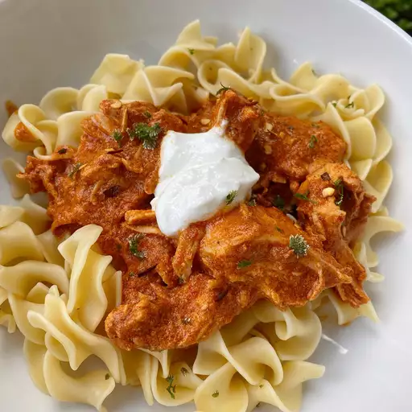

Lasagna

How to make Paprikash
Homemade Paprikash may have a few steps, but each step is
easy and I assure you it’s worth the time; the perfect
Italian meal! This is a really easy Paprikashrecipe.
Ingredient list
- (12 ounce) package egg noodles
- tablespoons butter
- tablespoon minced parsley
- ½ teaspoons salt, divided
- teaspoon ground black pepper, divided
- tablespoon olive oil
- shallots, thinly sliced
- cloves garlic, coarsely chopped
- cups arrabbiata pasta sauce
- cup chicken broth
- tablespoons red wine vinegar
- pounds boneless, skinless chicken thighs
- cup plain yogurt, divided
- tablespoons paprika
Steps to Follow
- Fill a large pot with lightly salted water and bring to a
rapid boil. Cook egg noodles at a boil until tender yet
firm to the bite, 7 to 9 minutes. Drain and toss with
butter, parsley, 1/2 teaspoon salt, and 1/2 teaspoon
pepper. Keep noodles warm while preparing the chicken.
- Turn on a multi-functional pressure cooker
(such as Instant Pot®) and select Saute function.
Add oil, shallots, and garlic; saute until fragrant,
2 to 3 minutes. Pour in pasta sauce, chicken broth,
and red wine vinegar.
- Season chicken with remaining 1 teaspoon salt
and 1/2 teaspoon pepper. Add chicken to the pot.
Close and lock the lid. Select high pressure
according to manufacturer's instructions;
set timer for 12 minutes. Allow 10 to 15 minutes for
pressure to build.
- Release pressure using the natural-release method
according to manufacturer's instructions,
about 10 minutes. Release remaining pressure
carefully using the quick-release method.
- Place 1/2 cup yogurt in a small bowl.
Add in 1/2 cup of sauce, a tablespoon at time,
to temper the yogurt. Add paprika and blend well.
Pour yogurt mixture back into the pot.
Shred the chicken thighs and serve over cooked noodles.
Garnish each serving with a dollop of yogurt.